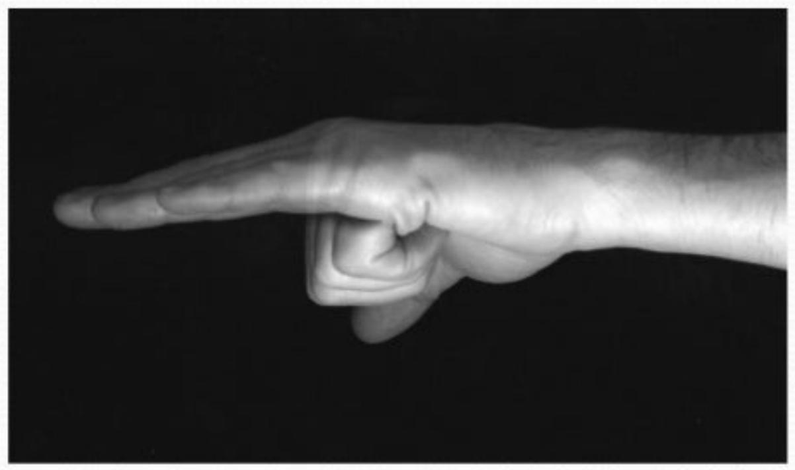

Compartment Syndrome
DR ASHWANI PANCHAL
P.G IN ORTHOPAEDICS
JSS HOSPITAL MYSORE
What is a compartment?
- Closed area of muscles group, nerves & blood vessels surrounded by fascia
Pressure: 5-15 mmhg
Definition:
An increased pressure within enclosed osteofascial space that reduces capillary perfusion below level necessary for tissue viability; the underlying mechanism is:
- increased volume within space
- decreased space for contents
- combination of both
What is a compartment syndrome?
- intra comp. pressure ( 35-40 mmhg )
- capillaries collapse
- Blood flow to muscles and nerves
Increased compartment pressure leads to increased venous pressure which decreases A-V gradient resulting in muscle and nerve ischemia.

Consequences -vicious cycle
- Swelling------dec. blood supply
- Muscles under go healing--
- Causes muscle fibrosis which leads to contractures AND NERVE DAMAGE
- gangrene
Why is it dangerous?
- Nerves:
- neuropraxia: will regenerate
- Ischemia: cell death
- Muscles: contracture (Volkmann's ischemic contracture)
- Gangrene
CAUSES
- Fractures
- Contusions
- Surgery
- Post Ischemic swelling after arterial occlusion
- Major vascular trauma
- Crush injuries
- Burns
- Prolonged limb compression
- Fracture of a long bone (Supracondylar humerus, forearm, hand, tibia and foot)
- Bleeding within the compartment:
- Post operative
- Closed reduction
- Tight cast
- Severe bruised muscle (even if there is no fracture)
- Don't take contusion lightly
Symptoms and signs
- Increased Pressure and Tightness
- Progressive pain out of proportion to initial injury
- Markedly swollen area
- Progressive neurologic deficit
- Seven P's
- Pain
- Pressure
- Pain with passive stretch
- Parethesia
- Paresis/ Paralysis
- Pulses
- Pallor
- Severe pain inappropriate to the injury(not relieved even with morphia)
- Burning of the affected limb
- Tight muscle(rigid)tightness feeling
- Numbness: bad sign
SIGNS & DIAGNOSIS
- Passive stretching of fingers or toes (muscle stretch)will lead to severe pain (diagnostic sign)
- Never wait for signs of ischemia (5 Ps):irreversible damage
STRETCH TEST
It is possible to stretch the affected muscles by passively moving the joints in direction opposite to that of the damaged muscles' action (( e.g. ::: passive extension of fingers produces pain in flexor compartment of forearm))
Technique
STRYKER TECHNIQUE
- MERCURY MANOMETER
- Wick hand held instrument
Stryker Stic System
Complications related to CS
Late Sequelae
- Volckmann's contracture
- Weak dorsiflexors
- Claw toes
- Sensory loss
- Chronic pain
- Amputation
MANAGEMENT
Non surgical management:
- Remove any tight bandage, tubigrip or soaked dressing
- Cast should be removed completely
- Elevation
Surgical management: (FASCIOTOMY)
Open skin and fascia down to a compartment. It is a surgical procedure where the fascia is cut to relieve tension or pressure commonly to treat the resulting loss of circulation to the tissue.
Fasciotomy Principles
- Make early diagnosis
- Long extensile incisions
- Release all fascial compartments
- Preserve neurovascular structures
- Debride necrotic tissues
- Coverage within 7-10 days
Indications for Fasciotomy
- Unequivocal clinical findings
- Pressure within 15-20 mm hg of DBP
- Rising tissue pressure
- Significant tissue injury or high risk pt
- > 6 hours of total limb ischemia
- Injury at high risk of compartment syndrome
CONTRAINDICATION - Missed compartment syndrome (>24-48 hrs)
Forearm Fasciotomy
- Volar-Henry approach
- Include a carpal tunnel release
- Release lacertus fibrosus and fascia
- Protect median nerve, brachial artery and tendons after release
Fasciotomy: Medial Leg
Fasciotomy: Lateral Leg
Fasciotomy of Hand
- 10 separate osteofascial compartments
- dorsal interossei (4)
- palmar interossei (3)
- thenar and hypothenar (2)
- adductor pollicis (1)
- Close skin by 2ry sutures after oedema subsides
It may need skin graft
Wound Management
- Wound is not closed at initial surgery
- Second look debridement with consideration for coverage after 48-72 hrs
- Limb should not be at risk for further swelling
- Pt should be adequately stabilized
- Usually requires skin graft
- DPC possible if residual swelling is minimal
- Flap coverage needed if nerves, vessels, or bone exposed
- Goal is to obtain definitive coverage within 7-10 days
- After the fasciotomy, a bulky compression dressing and a splint are applied.
- "VAC" (Vacuum Assisted Closure) can be used
- Foot should be placed in neutral to prevent equinus contracture.
- Incision for the fasciotomy usually can be closed after three to five days
Complications Related to Fasciotomies
- Altered sensation within the margins of the wound (77%)
- Dry, scaly skin (40%)
- Pruritus (33%)
- Discolored wounds (30%)
- Swollen limbs (25%)
- Tethered scars (26%)
- Recurrent ulceration (13%)
- Muscle herniation (13%)
- Pain related to the wound (10%)
- Tethered tendons (7%)
Conclusion
Compartment syndrome is a serious syndrome, Which needs to be diagnosed early.
- Palpable pulse doesn't exclude compartment syndrome
- If diagnosis and fasciotomy were done within 24 hrs , the prognosis is good.
- If delayed, complications will develop.
The earlier you diagnose, the safer you are